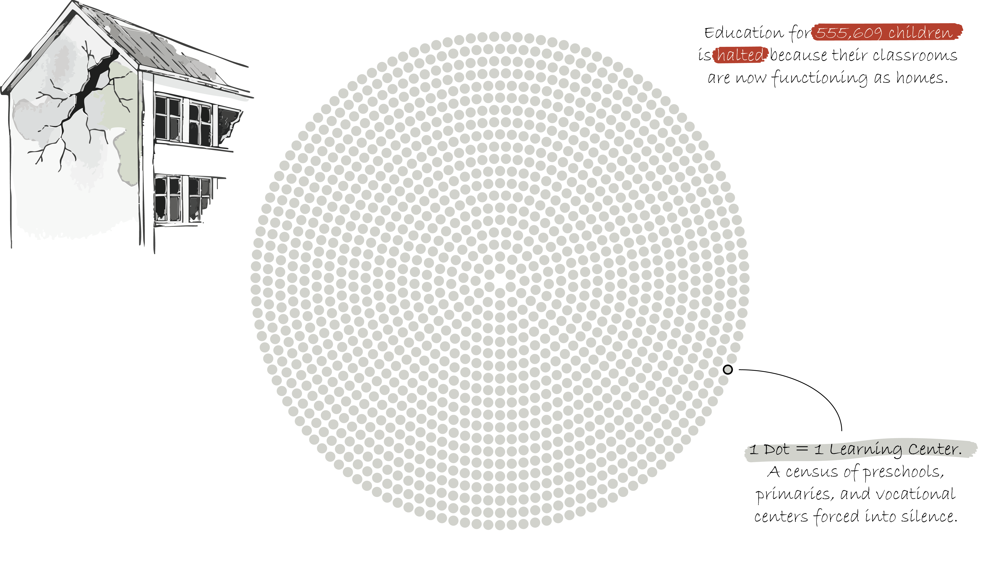
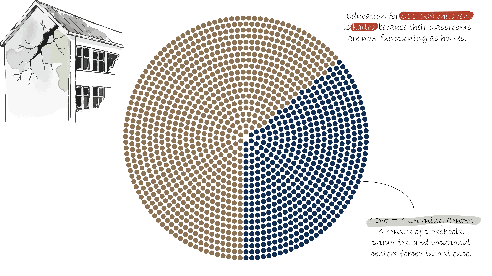
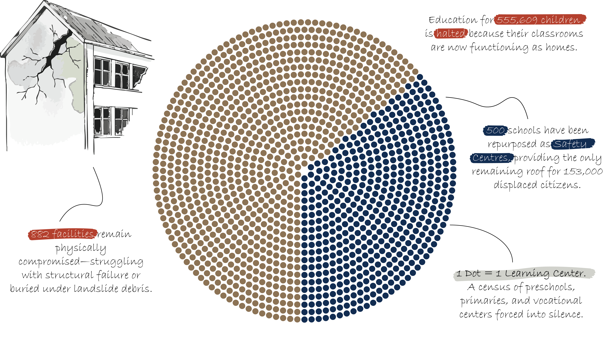
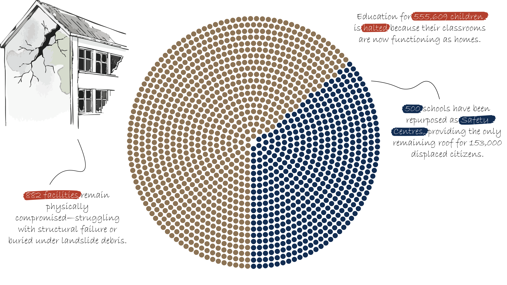
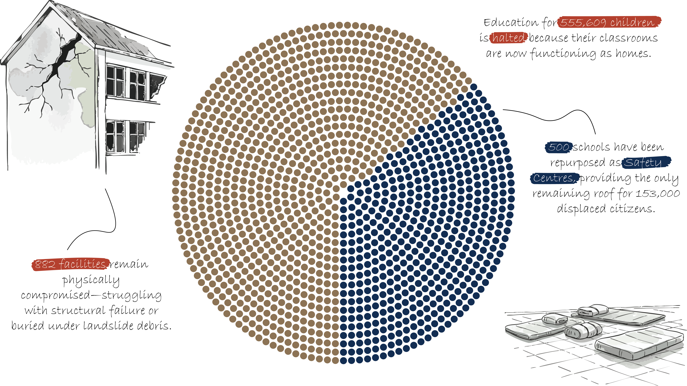
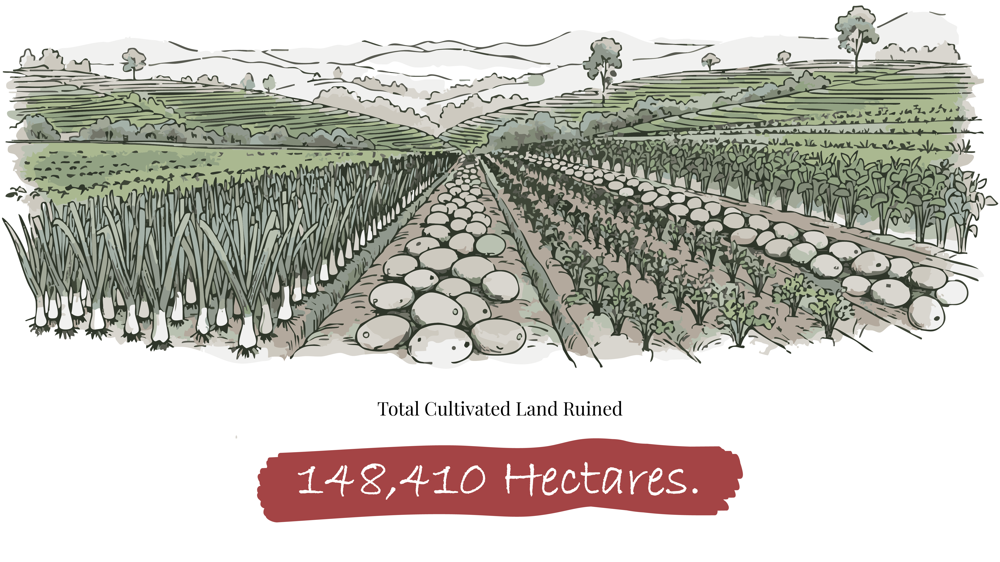
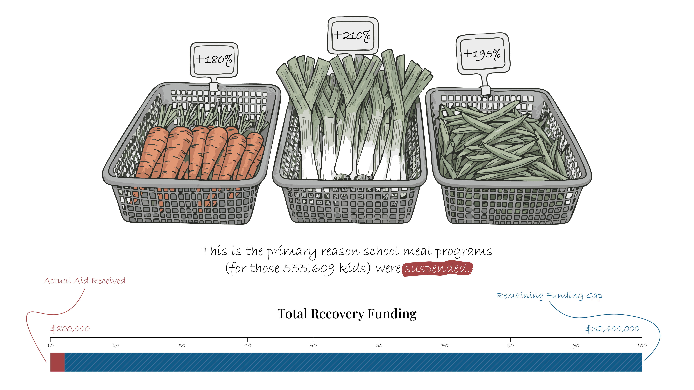

On November 28, 2025, life as we knew it stopped. Cyclone Ditwah hit our eastern shores with a force not felt in a generation. It wasn't just a severe weather event; it was the exact moment the power lines, the roads, and the bridges we depend on failed all at once. Within four hours of landfall, gale-force winds of 120km/h plunged nearly 4 million people into total darkness, instantly stripping away the foundational infrastructure of the modern nation.
What started as a low-pressure anomaly in the Bay of Bengal rapidly intensified into a super-cyclonic storm. As it made landfall, the sheer volume of water overwhelmed both natural catchments and man-made reservoirs, triggering a cascading failure across the island. The systems built to protect and connect citizens collapsed simultaneously.





A Systemic Collapse
The tragedy moved exponentially faster than the relief operations could mobilize. While urban drainage systems in the western provinces were immediately overwhelmed—transforming city streets into navigable rivers—a far more violent geological collapse was occurring in the central highlands.
The sheer volume of rainfall, exceeding historical maximums, saturated the terraced slopes and delicate root systems beyond their critical threshold. The landscape simply could not hold the weight of the water.
"Access was entirely severed within the first twenty-four hours."
Rapid assessments recorded exactly 206 major transit routes permanently blocked by debris, alongside over 200 active landslide zones that swallowed hillside communities whole. Emergency response teams found themselves completely cut off, forced to navigate treacherous, unstable terrain on foot while secondary slips continued to threaten survivors.


Note: Swipe to see how a village in Kandy was transformed into a mudslide channel overnight. Geologists warn soil stability may take decades to normalize.
The Anatomy of the Storm
Cyclone Ditwah did not strike uniformly; it dragged its destruction across the island in three distinct, devastating phases. Tracing its chronological path reveals why different provinces suffered entirely different forms of systemic failure—from coastal flooding in the south to geological collapse in the center, and widespread agricultural ruin as it exited the north.

The Landfall
Cyclone Ditwah initiated its assault on the southern and eastern coastlines. It brought an unprecedented storm surge that instantly overwhelmed coastal defenses, swallowing fishing towns and submerging the primary coastal highway within minutes of landfall.

Highland Collapse
As the system moved inland, it stalled over the central hills, dumping a month's worth of rain in roughly 12 hours. The saturated earth reached its geological limit, triggering hundreds of landslides that isolated entire towns and destroyed the highland infrastructure grid.

The Northern Exit
Finally, the weakened but highly saturated storm system tracked northwards to exit the island. While wind speeds dropped, it left a trail of severe flash flooding across the northern plains, heavily devastating the primary agricultural zones just before the harvest.
Displacement Arc: The Slow Return
[Primary Chart Placeholder: Timeline showing the rapid displacement spike to 230,000 on Day 4, and the slow, stalled plateau at 153,000 remaining displaced today.]
Survival Over Schooling
The crisis extended far beyond broken buildings. While an island-wide assessment found that 1,382 schools were severely damaged, the intact schools were immediately requisitioned and repurposed into emergency safety hubs. This created a secondary crisis: you cannot resume classes if the classroom is actively being used as a bedroom for displaced families.
Note: Education infrastructure functioning as survival infrastructure. 555,609 students are currently cut off from both classes and their primary source of daily nutrition.
The Education Paralysis
[Combined Chart Placeholder: Visualizing the paradox of 555,609 children lacking education alongside the 500+ schools actively being used as survival shelters.]
The Chain Reaction
When the floodwaters finally receded, they left a silent, long-term economic crisis in the soil. The storm hit exactly when farmers were planting rice for the Maha season. Nearly 20% of the country's cultivated land—over 148,410 hectares—was wiped out in a single weekend. The foundation of the nation's food supply fractured overnight, leaving 70,000 smallholder farmers without insurance or an immediate path back to the fields.
This massive reduction in yield is why a simple vegetable now costs three times what it did last year. The physical damage to the land triggered an immediate chain reaction, resulting in a devastating surge in basic market pricing for urban populations.

Source: Ministry of Agriculture Land Audit.
From Field to Table: The Cost of Scarcity
[System Flow Chart Placeholder: Connecting 148,410 hectares of destroyed crops → to the resulting price surges of essentials → culminating in 32% of affected households now facing severe food insecurity.]
The Cost of Silence
Physical and economic recovery requires significant, immediate capital, yet international aid has been severely delayed. The gap between what is urgently needed on the ground and what has actually arrived in the treasury is leaving millions vulnerable, effectively halting national stabilization efforts.

Source: UN OCHA Financial Tracking Service.
Need vs. Reality
[Gap Chart Placeholder: Dual bar chart showing Total Affected (2.2M) vs. Total Reached (250K), alongside Required Funding ($35M) vs. Received Aid (~$23M).]
The Scars Left Behind
The story of Cyclone Ditwah isn't over—it is simply getting quieter. With agricultural funding still facing a massive deficit and over 150,000 people yet to return home, the recovery rate has completely stalled. We cannot just wait for the next monsoon. Bridging this gap is the only way to ensure our island stays resilient against the storms to come. The island we see today is fundamentally not the same one we lived on before November 2025.